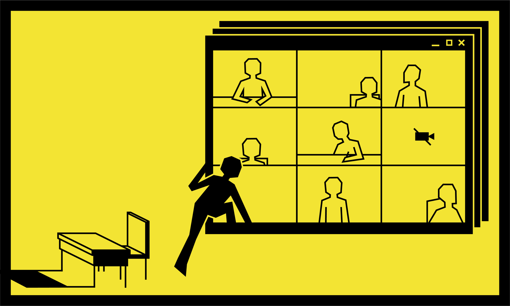

Daily Pennsylvanian
Role: Deputy Design Editor
Date: 2020 - 2021
Summary: Below are a few of my pieces that I have created as a Deputy Design Editor for The Daily Pennsylvanian, an award-winning student-run newspaper based in Philadelphia. These include illustrations that are featured in web and print editions of the newspaper, as well as graphics for the DP+ app. As Deputy Design Editor, I helped manage illustration requests, create magazine layouts, and develop last-minute graphics.
